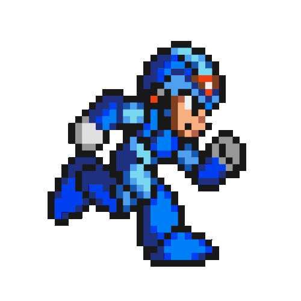

En este sitio de prueba vamos a encontrat mucha informacion(en realidad no xD) de la saga megaman que esta bien muerta pero sirve como practica, nos enfocaremos en colocar unos buenos ejemplso como gif y video tags antes de centrarnos en hacer la misma pagina luego con grids y efectos de frameworks, y sin perder mas tiempo, empezemos
tambien insertare una video tag de un documento del pc para que te ahgas uan pequeña idea ya que importar videos de yotevi es distinto qeu de la pc :c
click en Zero para regresar